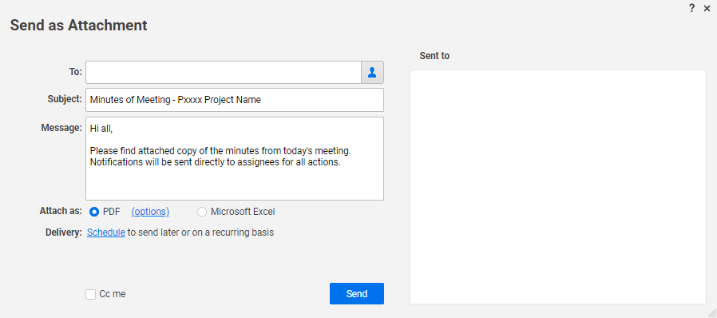
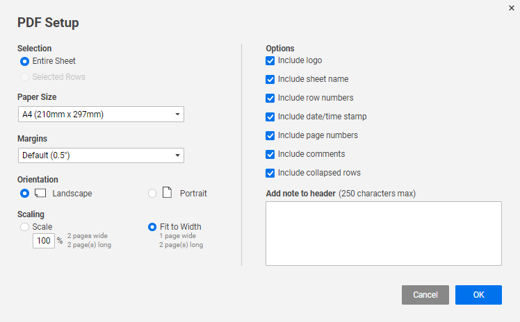

Smartsheet#
Project Workspace#
A consistent location and structure of project assets is required. The following is the process for generating a standard project workspace in Smartsheet, which includes standard templates for various project management processes and establishes uniform reporting and dashboarding.
Pre-Requisites
- A Smartsheet license is required.
To generate a workspace for the project:
-
Copy the template workspace named 'xxxx_GTE ProjectWorkspaceTemplate' in Smartsheet by choosing 'Save as New'.
Note: To copy a workspace, right click it in the workspace tree and choose 'Save as New'. See the Smartsheet documentation here for more detailed instruction.
-
Name the workspace according to the template convention, where:
- 'xxxx' is the Project ID, and
- 'GTE' should be replaced with the Client's name in pascal case, and
- 'ProjectWorkspaceTemplate' should be replaced with the project name as it reads in the Project Register (which should be pascal cased).
Note: Pascal case should be interpreted as all words capitalised, without spaces, and with underscores used to separate words where the first word ends in a capital (eg SCADA_Upgrade).
-
When presented with options:
- Under 'Sharing Options', check 'Sharing'. The templates within the workspace will adopt the appropriate standard collaborators and you can add others later as required.
- Under 'Automated Workflow & Alert Options', check 'Include recipients & permissions settings'.
-
Leave the 'Data & Formatting Options' all checked. Some templates are pre-populated with reference data and this ensures those rows will be copied to the new workspace, and forms, shared filters, etc will also be available.
-
Leave 'Newly created sheets' selected.
Project Schedule#
A consistent project schedule structure is required to facilitate team familiarisation and to present uniform to the client for all GTE projects. The GTE standard project schedule also includes reporting calculations required for organization wide analysis.
Setup#
The project schedule is to be created and managed in Smartsheet. The following outlines the process for generating a standard project schedule in Smartsheet.
Pre-Requisites
- A Smartsheet license is required.
- It is assumed the workspace for the project has been created from the project workspace template. If this has not yet been done, first refer to Project Workspace.
To setup the project schedule:
-
Locate the sheet named 'Pxxxx_Schedule [TEMPLATE]' in the project workspace.
Note: If the sheet cannot be located or was deleted, open the project workspace template and right-click the file of the same name, choose 'Save as New' and save it to the relevant project workspace.
-
Open the sheet and rename it according to the template convention by clicking the existing sheet name in the header bar, where:
- 'xxxx' is the Project ID, and
- '[TEMPLATE]' should be removed from the name.
-
Open the Sheet Summary and set the 'Project ID' field to the appropriate value (excluding the leading "P").
Note: The Sheet Summary can be opened using the summary icon
 on the right menu bar. See the Smartsheet documentation here for more detailed instruction.
on the right menu bar. See the Smartsheet documentation here for more detailed instruction.
Features#
Activity Level Resource Loading#
Project Meeting Minutes#
Smartsheet templates are available for routine meetings conducted for GTE projects. The templates may include agenda prompts, and provide a standardised format for recording minutes and actions.
These templates are to be used where possible in the interest of uniformity of GTE's product, and to leverage the automation provided by the Smartsheet platform in assigning actions, and notifying and reminding actioners of incomplete actions.
Setup#
The following outlines the process for using the kick-off meeting minutes and general meeting minutes templates in Smartsheet. The templates are very similar, with the key differences being: - The kick-off meeting minutes template includes agenda prompts. The general meeting minutes has placeholders for the Project Manager to set sections relevant to a particular project. - The general meeting minutes includes a block at the bottom for agreeing the 'Next Meeting' time.
Pre-Requisites
- A Smartsheet license is required.
- It is assumed the workspace for the project has been created from the project workspace template. If this has not yet been done, first refer to Project Workspace.
To setup the minutes:
-
Locate the sheet named 'Pxxxx_KO_MeetingMinutes [TEMPLATE]' or 'Pxxxx_General_MeetingMinutes [TEMPLATE]', as relevant, in the project workspace.
Note: If the sheet cannot be located or was deleted, open the project workspace template and right-click the file of the same name, choose 'Save as New' and save it to the relevant project workspace.
-
Open the sheet and rename it according to the template convention by clicking the existing sheet name in the header bar, where:
- 'xxxx' is the Project ID, and
- '[TEMPLATE]' should be removed from the name.
-
Open the Sheet Summary and set the 'Project ID' field to the appropriate value (excluding the leading "P").
Note: The Sheet Summary can be opened using the summary icon
on the right menu bar. See the Smartsheet documentation here for more detailed instruction.
Usage#
It is expected that minutes and actions are recorded in Smartsheet during the relevant meeting such that these can be distributed promptly thereafter. It most cases, minimal or no tidy up work should be required.
The general meeting minutes sheet is used for each regular general meeting with new minutes and actions added to historical records as the project progresses. The Not Done filter is used to hide old items.
-
Enter the meeting date, time and location in the header rows at the top of the sheet. For the general meeting minutes, additionally adjust the 'Meeting #'.
-
Enter attendees in the relevant cell in the header row. If you start typing a name or email address and aren't seeing the contact list autosuggest the contact, you can click
Add New.Tip
It is worth taking the time here on first use to establish contacts for attendees not already appearing in Smartsheet so that when they are assigned to actions in the minutes, automated notifications will work correctly with the person's designated email address.
-
Traverse the meeting agenda and record minutes and actions as necessary in the 'Details/Action' column. Actions will be identified as those rows with a 'Status' set. For minutes/notes that do not involve an action, leave the 'Status' empty.
Tip
- The 'Details/Action' column can be indented to make nested minutes and actions. Use the
 icons on the toolbar, or
icons on the toolbar, or Ctrl + ]on the keyboard. See the Smartsheet documentation here for further details.
Caution
All minutes and actions must be indented at least one level below the section header to establish the correct item numbering.
- The 'Details/Action' column can be indented to make nested minutes and actions. Use the
-
Add and re-order rows and sections as necessary to suit the project requirements.
Note
- If more rows are needed in a particular section, insert the rows and drag down the formula in the 'Item' column to maintain the numbering.
- Rows can be re-ordered by clicking the row handle on the left edge of the screen and dragging to the desired location.
- If additional sections are required, select the rows covering an existing section (ideally one that is empty) by
Shiftclicking the handles on the left edge, and copy (orCtrl + C) and paste (orCtrl + V). Adjust the 'Item' number in the section row as required.
-
Set the 'Status' for actions to "Open". Assign a relevant person from the project team and agree a reasonable and achievable 'Due Date'.
Tip
Smartsheet will flag overdue actions, and the assignee will receive notifications via automated workflows as the 'Due Date' approaches so the date should be chosen with this in mind to avoid unnecessary prompts.
-
For general meetings (does not apply to kick-off meeting), agree the next meeting date, time and location and enter these in the footer block.
Tip
The date 7 days after the current meeting date is displayed and will be the default next meeting date. If this is overridden at any stage you can re-establish the formula by typing
=and clicking the cell to the right of the text '+7 days'.
The following filters are available when using the sheet:
- Not Done: hides rows checked as 'Done'. For the general meeting in which the sheet is used for each regular meeting, this filter will generally be applied at all times to avoid showing historical actions and minutes from prior meetings.
Automated Workflows#
Notification - New Action Assigned#
- Trigger:
'Assigned To' changes+'Done' is not checked+'Status' is not "Closed" - Action: Email notification to 'Assigned To' with action details. This is an update request, allowing the assignee to provide comments and
Example
Subject: New Action Assigned for P1900 - Example Project
An action has been assigned to you from the kick-off meeting for P1900 - Example Project. Please ensure that you are able to complete the action before the due date (01/01/25) or discuss an extension with the Project Manager.
The assignee can provide comments and attachments even without closing the action, for example as progress updates. The 'Closeout Comments' field is not expected to be used unless, upon statusing the action as "Closed", there is need for additional clarification.
When the action is complete, the assignee should change the 'Status' to "Closed". It will not drop off the minutes until the GTE Project Manager checks 'Done', which allows the action closeout to be reviewed and accepted.
Notification - Action Due within 3 Days#
- Trigger:
9am on the day 3 days before due+'Done' is not checked+'Status' is not "Closed" - Action: Email notification to 'Assigned To' with action details.
Example
Subject: Action Due Soon for P1900 - Example Project
An action assigned to you from the meeting for P1900 - Example Project is due soon. Please ensure that you are able to complete the action before the due date (01/01/25) or discuss an extension with the Project Manager.
Notification - Action Overdue#
- Trigger:
9am on the day 1 day after due+'Done' is not checked+'Status' is not "Closed" -
Actions:
- Email notification to 'Assigned To' with action details.
Example
Subject:
Action Overdue for P1900 - Example ProjectAn action assigned to you from the kick-off meeting for P1900 - Example Project is now overdue (Due: 01/01/25). Please action as soon as possible or discuss an extension with the Project Manager.
- Email notification to 'GTE PM' with action details.
Example
Subject:
Action Overdue for P1900 - Example ProjectAction KOM.1.01 assigned to James Ricard is overdue (Due: 01/01/25). An overdue notification has been sent.
Status: Open Action: Confirm MCC001 load.
Other#
Additionally, Smartsheet records:
- The date when any row is statused as "Closed".
- The date when any row is checked 'Done'.
Distribution#
The automated workflows ensure timely notifications of actions to those assigned to these, however this does not negate the need to distribute the meeting record as a whole, inclusive of minutes. This should be distributed by email in traditional PDF form, as soon after the meeting as possible and can be done through the Smartsheet interface as follows:
-
With the relevant meeting minutes sheet open, click
File > Send as Attachmentto open the below window.
-
Enter the appropriate recipients in the 'To' box and modify the 'Subject' and 'Message' as required. The below recommendations can be used.
Subject
MessageMoM - Pxxxx Project Name - Kick-Off Meeting / Weekly MeetingHi, Please find attached a copy of the minutes from today's meeting and advise any omissions or amendments. Notifications have been sent directly to assignees for all actions. -
Check the 'CC me' option to ensure a copy is provided as confirmation of the distribution, and for email records.
-
Click
optionsto open the below window and confirm the options for the PDF attachment.
Info
The default options should be valid as these have been selected in the template. It is important to 'Include comments' so that any conversations against actions are included in the printout.
-
Click
Send.
Info
Smartsheet maintains a record of all distributions sent through the interface which can be a useful reference in the future.
Tip - Automate the Distribution for Recurring Meetings
If the meeting is held on a regularly recurring basis, the distribution delivery can be automated to be sent out, for example, half an hour following the regular scheduled meeting completion time. Click Schedule on the 'Send as Attachment' popup and set the appropriate 'Delivery Options' to do this. Note that it will be necessary to remember to include any new attendees at subsequent meetings that should receive the automated distribution.
Resource Views#
Resource Views provide the visibility for the loading of GTE human resources and can be used as part of effective Resource Management.
The views are automatically generated from resource assignments made at the project activity level, and from additional non-project schedules designed to capture auxiliary assignments such as leave and secondments.
Project Resource Views#
A Resource View showing all of the resources currently assigned to activities on a project is available to the Project Manager from the Gantt View of the Smartsheet project schedule. To access:
- Switch to Gantt View
-
Select the Resource View icon

Note: See the Smartsheet documentation here for further details.

Team Resource Views#
It is not possible to share Resource Views in Smartsheet so these need to be setup for the individual.
Pre-Requisites
- A Smartsheet license is required.
- You must be a designated Resource Viewer in Smartsheet, as set by the System Admin.
To setup a Resource View for your team:
- In Smartsheet, click the Menu icon (upper-left corner of the window) and then 'Browse'.
- Scroll to the bottom of the workspace tree and click 'Resource Views'.
- Right-click in the Resource Views folder area, and click 'Create New View'.
- Select 'By Group' in the dropdown.
- In the list of groups, scroll to those starting with "[T]" (for team) and select your team.
Tip
You can create multiple Resource Views. It may be useful to create a second focussed on resource types. Repeat steps 1-4 and instead of selecting the team at step 5, choose multiple "[R]" (for resource type) groups as relevant.